NESMAKE使用说明
使用界面如下图示：
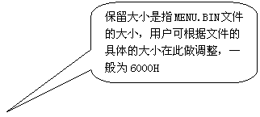上图界面中左侧为编缉区，编缉区中的菜单为右键菜单，右侧为功能按钮，具体操作方法如下：
1、查看文件属性
在编缉区点击右键，选择属性功能，显示如下属性面板，记录了文件位置，大小，卷屏方式，是否带SRAM等信息。
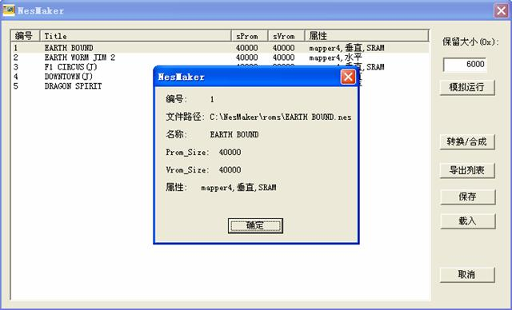
1、添加游戏：
在编缉区点击右键-“添加”，打开下图所示对话框:

选择要添加的游戏文件完成添加；
或者直接将NES文件拖到上图界面里；如果想批量添加游戏,SHIFT或CTRL键选择多个文件，拖到上图界面里即完成添加。
演示:
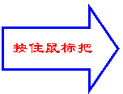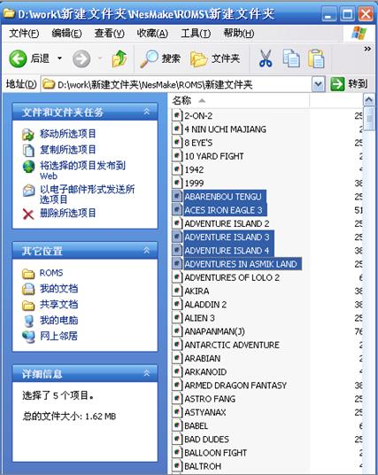 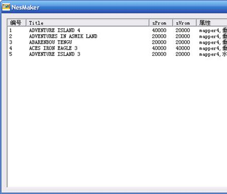
2、更改游戏名:
单击文件的标题区
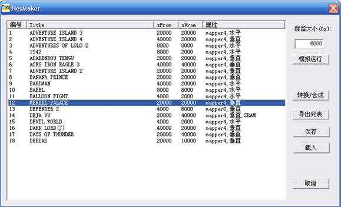
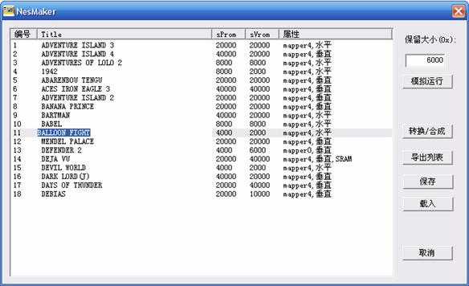
3、删除游戏：
删除单个文件，右键点击要删除的文件―“删除”；
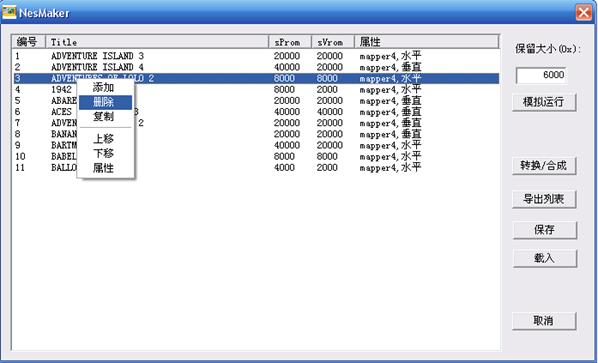
删除多个文件，用CTRL和SHIFT选取
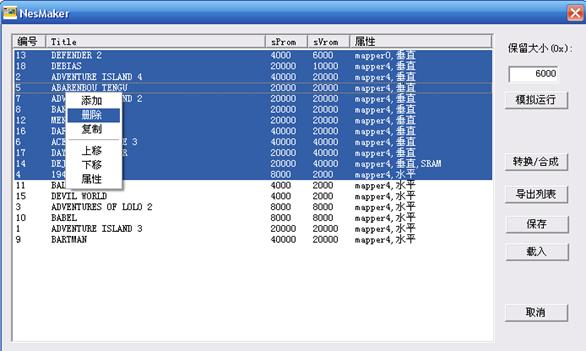
4、调整顺序：
调整顺序有两种方法，这两种方法都能对单个或多个文件进行操作：
方法一：利用编缉区右键菜单中的“上移”，“下移”功能来调整顺序
演示：
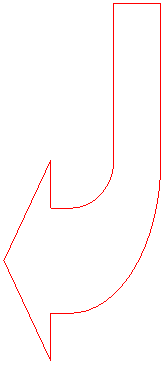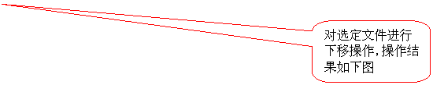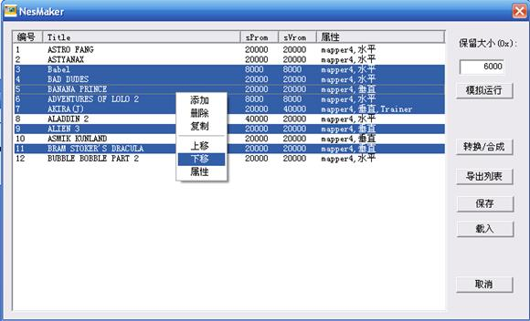
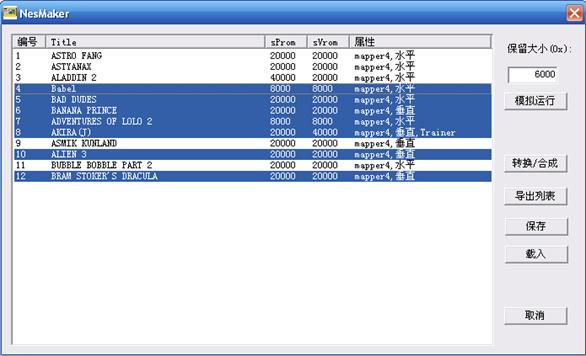
方法二：用鼠标直接对选定文件进行顺序调整：
演示：
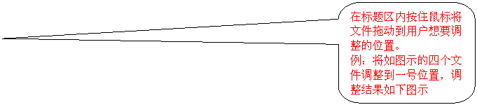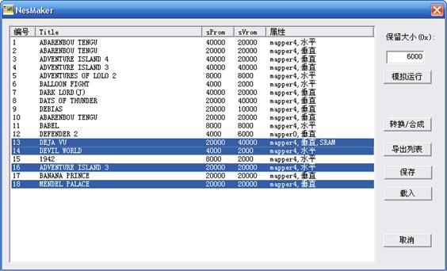
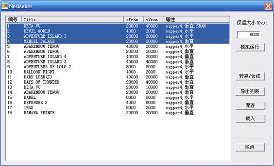
5、合成BIN文件:
点击“转换/合成”，在NESMAKE所在目录下生成最终的.BIN文件；点击“模拟运行”或直接运行当前目录下的rom.bin文件即得到最后一次转换/合成的编译结果。
6、生成gamelist:
点击“导出列表”，在NESMAKE所在的目录下生成ROM.LST文件，此文件记录了每个游戏的游戏名，PRO和PPU大小，卷屏方式以及是否带有SRAM等信息。
7、载入/保存编缉列表:
在编缉过程中点击“保存”，在NESMAKE所在目录下生成.save文件保存当前编缉列表；
 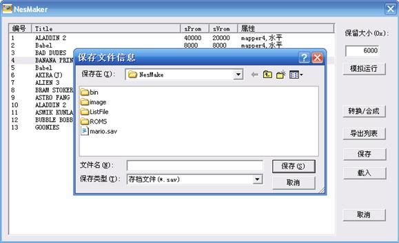
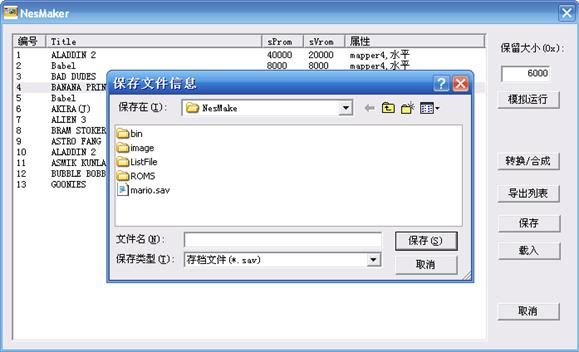
点击“载入”,打开保存过的.save文件
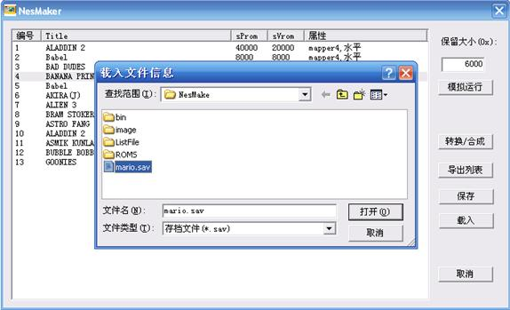
建议用户对列表进行了修改后及时进行保存,避免对后面的操作造成重复和不便，您也可以用记事本打开保存过的.save文件,按照相应的格式进行修改。
此程序会自动处理卷屏方式，但如果编缉的游戏含有子代码,则需手动加入,其方法如下：
打开gamesub.inc文件将子代码添加进去，并将其标号写入gamedef.inc文件相应位置；